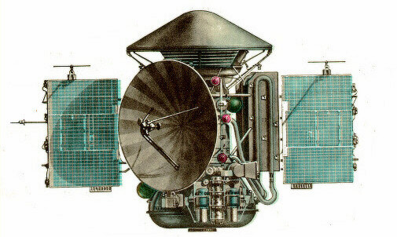
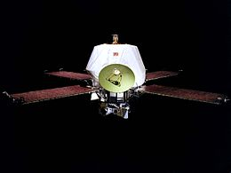
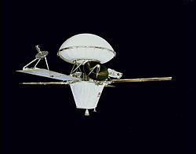
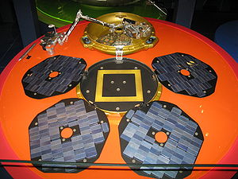
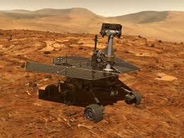
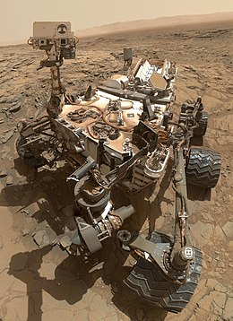
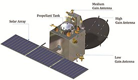

Mars 3

Mars 3 was a robotic space probe of the Soviet Mars program which later became ROSCOMOS, launched in 1971. After Mars 2 failed in its mission, Mars 3 became the first space
probe to attain soft landing on the red planet in December 1971. But it failed 110 seconds after landing transmitting back only a gray image. It has
a combined mass of 4,650 Kg during launch. Orbiter weighed around 3440 Kg and lander around 1210 Kg. The descent module entered the Martian atmosphere
at roughly 5.7 Km/s. The failure, immediately after landing is attribute to a Mars dust storm which might have damaged the commuication system.
Mariner 9

Mariner 9 was launched by NASA in 1971 at Cape Canaveral Air Force Station, Florida. It arrived at the red planet on November 24th, 1971. It became
the first spacecraft to ever orbit another planet, closely beating Soviet's Mars 2 probe. It succeed in sending clear pictures of the surface.
Mariner 9 concluded its mission in October, 1972. The images from the orbiter exposed craters, river beds, extinct volcanoes such as Olympus Mons, canyons, evidence
of wind and water erosions among other intereting elements.
Viking 1

Viking 1 was sent to Mars by NASA along with Viking 2 in August 1975. It became the second spacecraft to commit a soft landing on Mars. It held
the record for longest surface mission on Mars (around 6 years) till the record was broken by the Opportunity rover in 2010. It was launched using a Titan launch
vehicle. It carried a biological experiment to determine the presence of life on Mars. The observations obtained thorugh the mission also matched the predictions
of General relativity.
Beagle 2

The Beagle 2 was part of the Mars Express mission sent by European Space Agency in 2003. It was an inoperative British lander. It was made with the intent to look for
past life 1.5 m under the surface of Mars. It was launched on 19th December 2003. It was expected to land on Mars by December 25 but no contact was received during landing.
The Europen Space Agency declared the mission as lost in February 2004. It's location was finally found through images from NASA's Mars reconnaisance orbiter in January 2015.
Spirit

Spirit and Opportunity were twin rovers sent to Mars in June 2004. Spirit is a robotic rover on Mars, active from 2004 to 2010. It was one of two rovers of NASA's Mars Exploration Rover Mission. The rover was stuck
in a sand trap at the end of 2009. The angle at which it got stuck obstructed its ability to recharge its solar batteries. It communicated with Earth
on March 22nd 2010. Even though it wass stuck it peformed its duty as a stationary scientific platform. It is a six-wheeled solar-powered robot of 1.5 meters high, 2.3 meters wide and 1.6 meters long.
It weighs around 180 Kg.
Curiousity

Curiousity was launched by NASA on November 26th 2011. The rover's goal include an assesment of Martian climate and Geology. It was landed on
Mars using a thruster rocket and a parachute. In August 2017, NASA celebrated the fifth year anniversary of the car sized rover's landing. As of October
2020 the rover is still operational. The design of the curiousity rover serves as the basis for the Perservarence mission by NASA in 2021. After a nation-wide
student contest, a NASA panel named the rover as Curiousity.
Mangalyaan

The Mars Orbiter Mission (MOM) was launched by ISRO of India on November 5th 2013 from sriharikota.It attained martian orbit in September 2014 and is still
operational. ISRO became the fourth space agency, after NASA of USA, ROSCOMOS of Russia and ESA of Europe to become successful in an interplanetary mission.
The MOM orbiter is currently being monitored from the Spacecraft Control Centre at ISRO Telemetry with support from the Indian Deep Space Network (IDSN) antennae
at Bengaluru and NASA's Deep Space Network. The mission is also named as Mangalyaan.